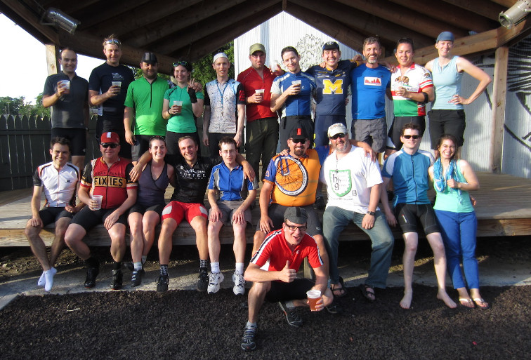
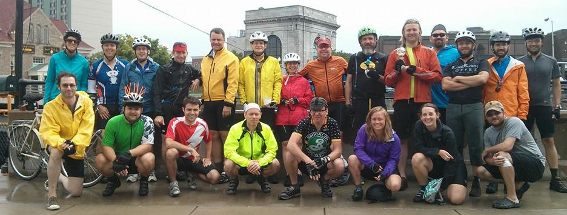
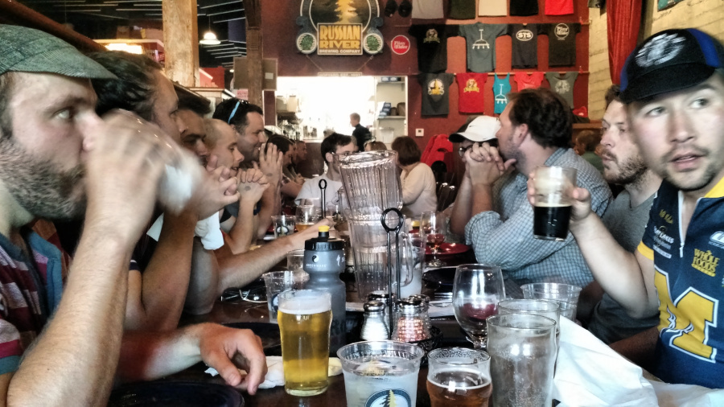
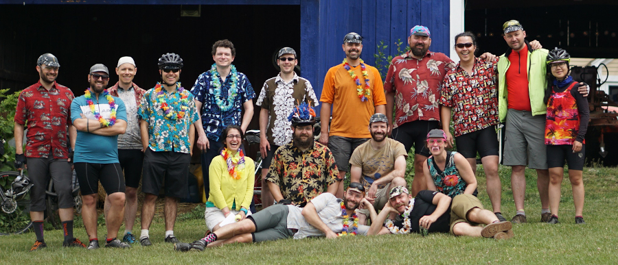
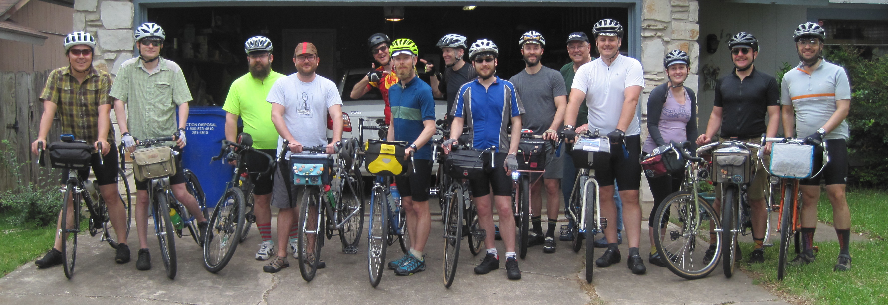
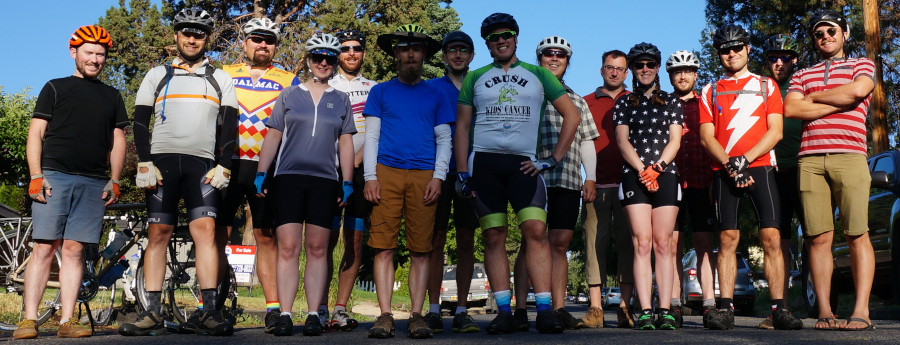
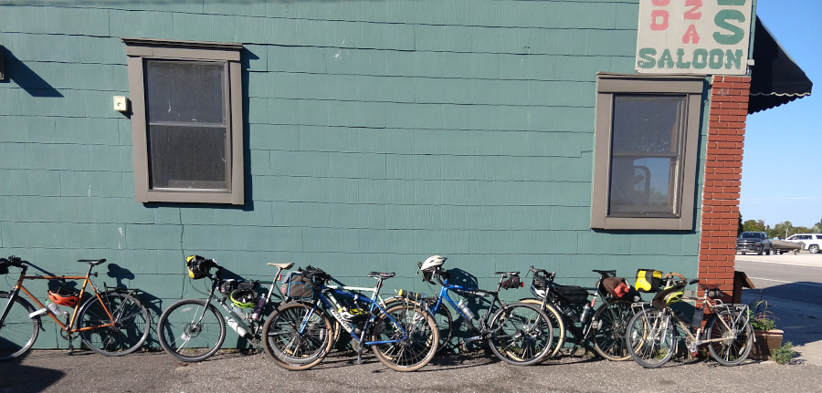
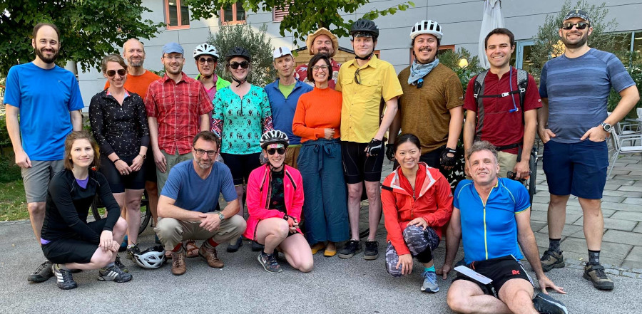
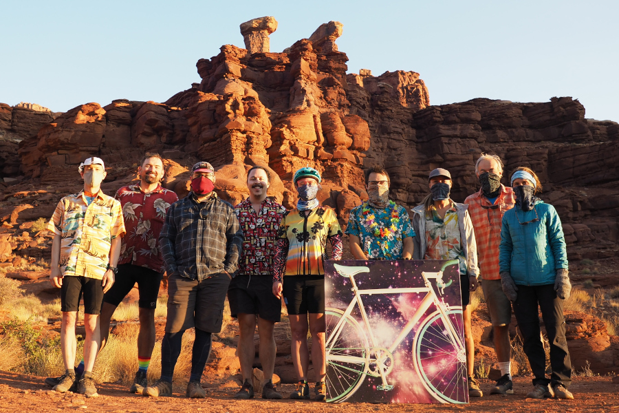

BBTXL's (pronounced bubba-tix-el) are week-long, supported, bike tours. The first week-long ride took place in 2013, and there's roughly one ride per year.
For many of us, this was our first experience bike touring. We generally camp overnight (preferably somewhere with a shower or a fresh body of water) and seek out breweries as food stops.
It's hard to explain the magic of these trips. Imagine your day being reduced to biking with 15-20 of your friends, punctuated with good meals, ice cream stops, and (of course) craft beers.
This site documents these trips, and hopefully inspires you to plan your own trip!
BBTXL (Ann Arbor, MI to Holland, MI)
BBTXL: BLU MI (Ann Arbor, MI to Bellaire, MI)
BBTXL: Finger Lakes (Jamestown, NY to Fair Haven, NY)
BBTXL: Nor Cal (Trinidad, CA to San Francisco, CA)
BBTXL: Northeast (Boston, MA loop)
BBTXL: Central TX (Austin, TX loop)
O'BBTXL (Bend, OR to Astoria, OR)
BBTXL: Northern MI (Traverse City, MI to Pictured Rocks)
BBTXL: Danube (Passau, DE to Budapest, HU)
BBTXL: WRiBBT (Canyonlands National Park, White Rim Road)
